Отечественная война 1812 г. и патриотический подъем, который пережил русский народ, способствовали стремительному взлету русской культуры в XIX в. В противовес утверждению П. Я. Чаадаева, что российская культура и цивилизация ничего не дали человечеству («Первое философическое письмо», 1836 г., «Телескоп»), именно в это столетие Россия подарила миру гениальные творения в литературе, живописи, музыке, фундаментальные открытия в науке, внесла огромный вклад в сокровищницу общечеловеческой культуры. В XIX в. завершился процесс формирования национальной культуры. Если по уровню экономического и социально-политического развития Россия уступала передовым европейским странам, то ее культурные достижения во многом опережали время. Стремительный культурный и духовный подъем в XIX в. позволяет назвать эту эпоху «золотым веком» русской культуры.
Литература
Доминирующее положение в системе духовной культуры занимала литература. На рубеже XVIII начала XIX в. закат русского классицизма нашел отражение в творчестве Г. Р. Державина. Главным объектом его поэтики являлся человек как неповторимая индивидуальность.
В. А. Жуковский – наставник Пушкина и его Учитель. Именно Василий Андреевич считается основоположником русского романтизма. После Жуковского и началась эпоха демократизации русского языка, которую так блестяще продолжил Пушкин.
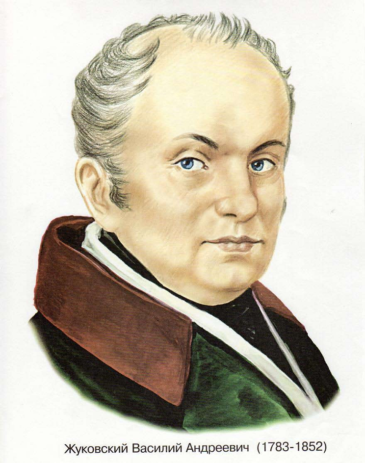В. А. Жуковский
А. С. Грибоедов вошёл в историю как автор одного произведения которое считается первой в истории русской литературы реалистической комедией, фразы и цитаты из комедии "Горе от ума" уже давно стали крылатыми.
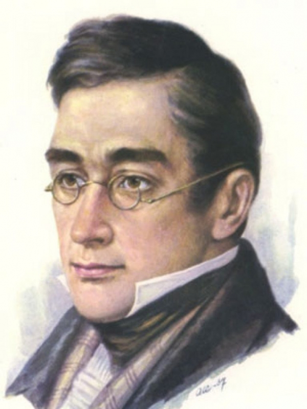А. С. Грибоедов
А. С. Пушкин его называли по-разному: А. Григорьев утверждал, что "Пушкин – наше всё!", Ф. Достоевский "великим и непонятным ещё Предвозвестителем", а император Николай I признался, что, по его мнению, Пушкин – "самый умный человек в России". Попросту говоря, это Гений.
А. Н. Островский указал и ещё на одно немаловажное достижение этого гениального поэта. До Пушкина русская литература была подражательной, упорно навязывающая чуждые нашему народу традиции и идеалы. Пушкин же "дал смелость русскому писателю быть русским", "раскрыл русскую душу". В его рассказах и романах впервые так ярко поднимается тема нравственности общественных идеалов того времени. А главным персонажем с легкой руки Пушкина теперь становится обычный "маленький человек" – с его мыслями и надеждами, желаниями и характером.
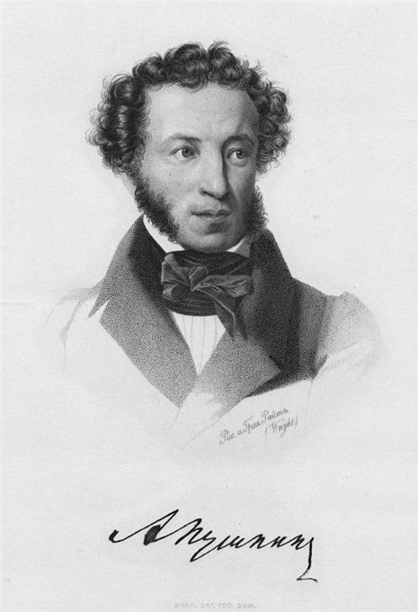А. С. Пушкин
М. Ю. Лермонтов – яркий, загадочный, с налетом мистицизма и неимоверной жаждой воли. Все его творчество – уникальный сплав романтизма и реализма. Причем оба направления вовсе не противостоят, а как бы дополняют друг друга. Этот человек вошел в историю как поэт, писатель, драматург и художник. Его перу принадлежат 5 пьес: самая известная – драма "Маскарад".
А среди прозаических произведений настоящим бриллиантом творчества стал роман "Герой нашего времени" – первый в истории русской литературы реалистический роман в прозе, где впервые писатель пытается проследить "диалектику души" своего героя, нещадно подвергая его психологическому анализу. Этот новаторский творческий метод Лермонтова в дальнейшем будут использовать многие русские и зарубежные писатели.
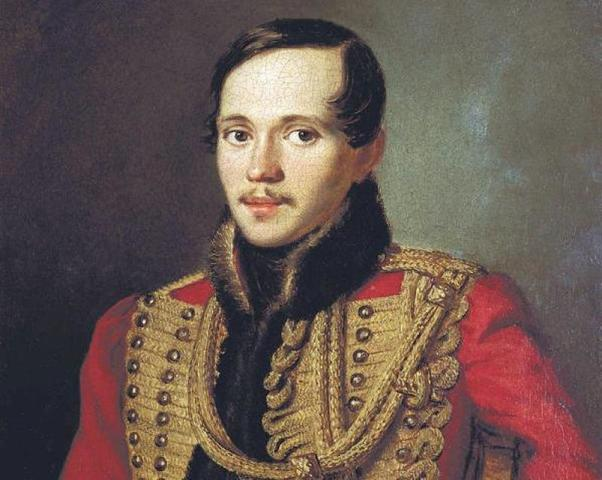М. Ю. Лермонтов
Театр и балет
В первой половине XIX в. наряду с крепостными театрами русских аристократов (Шереметевых, Юсуповых) появилась императорские театры Александринский (1832 г.) и Большой (Каменный) в Петербурге (основан в 1784 г.), Малый (1824 г.) и Большой (1825 г.) в Москве, существующие за казенный счет.
Под влиянием Отечественной войны 1812 г. в петербургском Большом театре с огромным успехом шли пьесы, посвященные борьбе за отчизну, прославляющие подвиги героев, в особенности трагедии В. А. Озерова. Самой известной постановкой озеровских пьес стала премьера «Дмитрия Донского». В театре были впервые поставлены «Горе от ума» Грибоедова, «Ревизор» Гоголя (1836 г.). Этапное значение для судеб русской сцены имела постановка опер М. И. Глинки «Жизнь за царя» (1836 г.), «Руслан и Людмила» (1842 г.). Любимцами аристократической публики Петербурга были трагические актеры В. А. Каратыгин, А. С. Яковлев и Е. С. Семёнова.
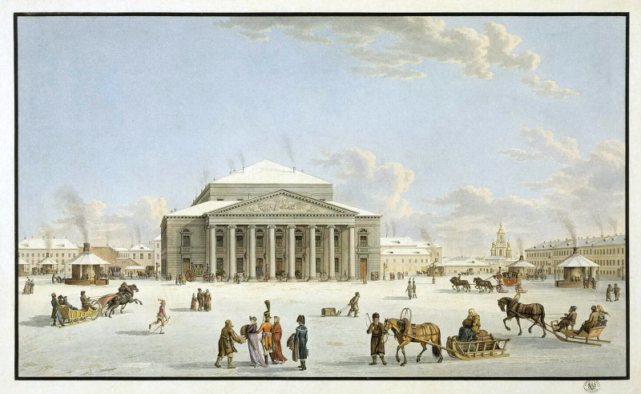Вид Большого театра в Санкт-Петербурге.
Музыка
Процесс утверждения русской музыкальной культуры шел в разных направлениях. Творчество композиторов начала XIX в. было связано с театром. К ранним театральным жанрам принадлежали сказочные оперы «Князь-невидимка» и «Илья-богатырь», патриотическая опера «Иван Сусанин» К. А. Кавоса, музыка О. А. Козловского к трагедиям В. А. Озерова, оратория С. А. Дегтярева «Минин и Пожарский» («Освобождение Москвы»).
Важную роль в развитии русского романса сыграли композиторы А. А. Алябьев, А. Е. Варламов, А. Л. Гурилев, А. Н. Верстовский. Автор знаменитого «Соловья» на слова А. А. Дельвига Алябьев внес романтическую струю в русскую вокальную музыку. Он написал романсы на слова Пушкина («Я вас любил», «Пробуждение», «Зимняя дорога» и др.).
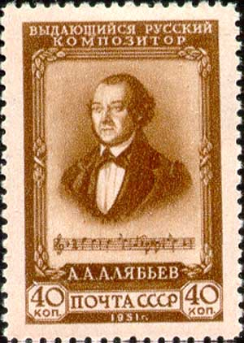Скульпутра
Скульптура первой половины XIX в. представлена первым в Москве гражданским памятником К. Минину и Д. Пожарскому на Красной площади И. П. Мартоса (1818 г.), конными скульптурными группами на Аничковом мосту в Петербурге П. К. Клодта. Память о победе над Наполеоном запечатлена в памятниках М. И. Кутузову и М. Б. Барклаю-де Толли у Казанского собора Б. И. Орловского, Александровской колонне на Дворцовой площади в Петербурге О. Монферрана, Московских триумфальных воротах О. И. Бове. Основным стилем, как и в архитектуре, являлся ампир. Огромное влияние на развитие скульптуры в этот период оказала Отечественная война 1812 г., что нашло отражение в увековечении памяти победившего русского народа.
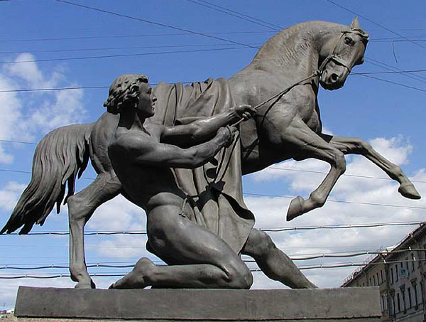Памятник: Укротители коней (1841–1844 гг.)
Скульптор: П. К. Клодт
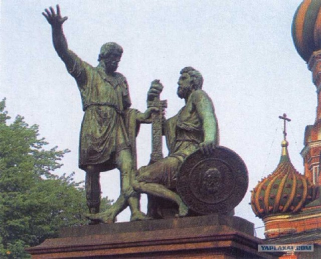Памятник: Минину и Пожарскому (1808–1818 гг.)
Скульптор: И. П. Мартос
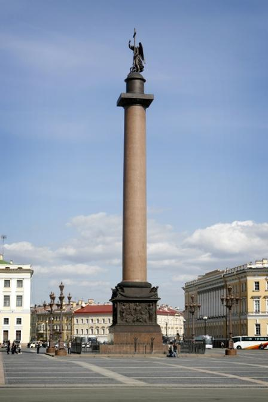Памятник: Александровская колонна (1834 г.)
Скульптор: О. Монферран
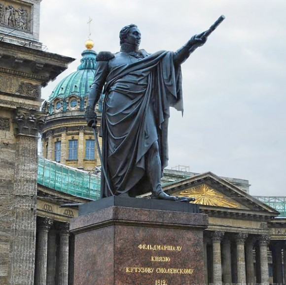Памятник: Памятник М.И. Кутузову (1837 г.)
Скульптор: Б. Орловский
Живопись
В живописи в этот период долго господствовал классицизм, представленный Академией художеств. В центре внимания «академиков» были библейские и религиозные сюжеты. Преодолеть узкие рамки «академизма» стремились О. А. Кипренский и В. А. Тропинин. Искусство Кипренского отличали страсть и порыв, стремление к передаче движения внутренней жизни. Лучшая часть его творчества портреты, среди которых наиболее известен романтический портрет А. С. Пушкина. Замечательны жанровые портреты Тропинина, вызванные интересом художника к среде: «Кружевница», «Золотошвейка», «Гитаристы».
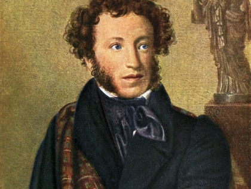Картина: Портрет А. С. Пушкина
Художник: О. А. Кипренский (1782–1836 гг.)
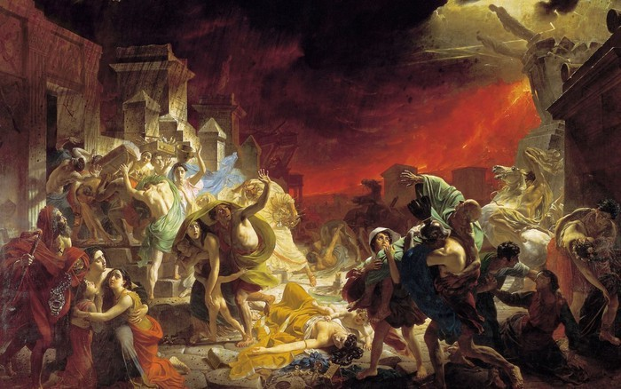Картина: «Последний день Помпеи»
Художник: К. П. Брюллов (1799–1852 гг.)
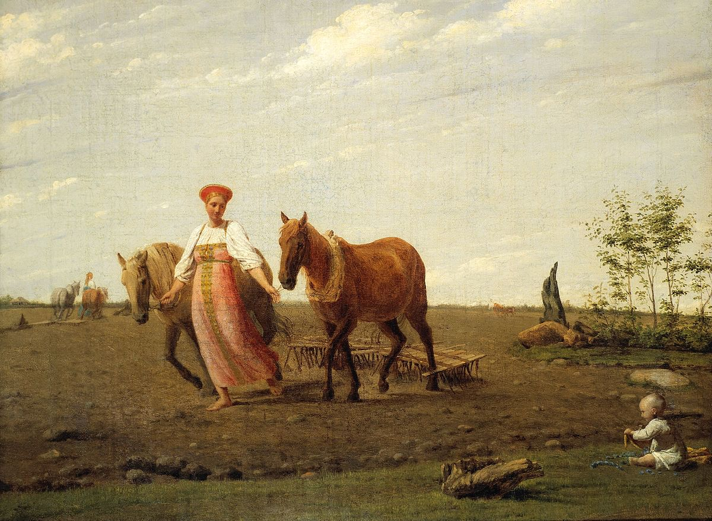Картина: «На пашне. Весна»
Художник: А. Г. Венецианов (1780–1847 гг.)